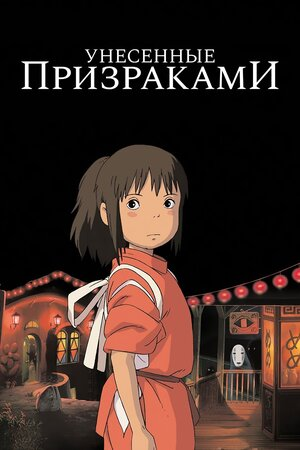

Унесённые призраками
Sen to Chihiro no Kamikakushi, 2001

Девочка должна спасти своих родителей в мире духов. Шедевр Хаяо Миядзаки, фаворит рейтингов мира.
КиноПоиск 8,5/10
IMDb 8,6/10
Остров собак
Isle of Dogs, 2018
В Японии будущего дворняги помогают мальчику найти его пса. Очаровательная анимация Уэса Андерсона.
КиноПоиск 8,1/10
IMDb 7,9/10
По ту сторону изгороди
Over the Garden Wall, 2014
Братья блуждают по странному лесу в поисках дома. Готическая сказка от создателей «Времени приключений».
КиноПоиск 8,7/10
IMDb 8,8/10